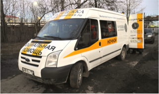
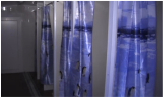
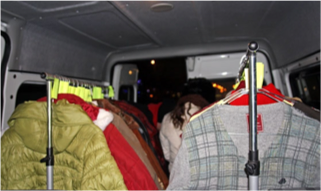
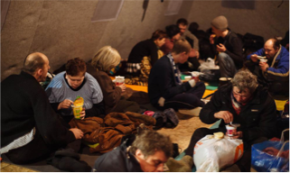
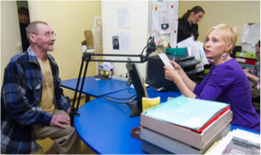
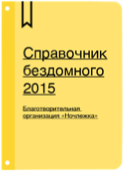
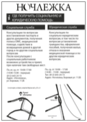

Поесть

Чтобы получить еду, нужно подойти на одну из остановок автобуса во время проезда и встать в очередь.
Каждый посетитель автобуса получает хлеб, горячий суп, второе и сладкий чай.
Бесплатно, ежедневно с 23:00 до 2:00
Маршрут движения автобуса
Другие места, где можно бесплатно поесть(21)
СПБ ГУ Центр социальной адартации лиц, освободившихся из
мест лишения свободы
По направлению, предоставляется временная регистрация
(от полугода), содействие в восстановлении права на жилье,
помощь в оформление документов. Центр работает круглосуточно.
+7 (812) 778-75-54
Консультация специалиста по средам с 10:00 до 17:00
Ул.Будапештская, 103/49(13-й этаж, код 24), м.Купчино
Помыться

Бесплатные душевые кабины, где можно помыться, привести себя
в порядок и постирать одежду.
Время пребывания в душевых кабинках ограничено 20 минутами. Банные
принадлежности, шампуни и прочее предоставляються бесплатно.
Бесплатно, ежедневно, круглосуточно.
Ул. Баровая, д. 112 Б
Другие места, где можно бесплатно помыться(9)
СПБ ГУ Центр социальной адартации лиц, освободившихся из
мест лишения свободы
По направлению, предоставляется временная регистрация
(от полугода), содействие в восстановлении права на жилье,
помощь в оформление документов. Центр работает круглосуточно.
+7 (812) 778-75-54
Консультация специалиста по средам с 10:00 до 17:00
Ул.Будапештская, 103/49(13-й этаж, код 24), м.Купчино
Получить вещи

Бесплатнаф раздача одежды осуществляется в реабилитационном
приюте и иногда на остановках Ночного автобуса.
Бесплатно, ежедневно с 08:00 до 18:00
Ул. Боровая, д. 112 Б
Другие места, где можно бесплатно получить одежду(11)
СПБ ГУ Центр социальной адартации лиц, освободившихся из
мест лишения свободы
По направлению, предоставляется временная регистрация
(от полугода), содействие в восстановлении права на жилье,
помощь в оформление документов. Центр работает круглосуточно.
+7 (812) 778-75-54
Консультация специалиста по средам с 10:00 до 17:00
Ул.Будапештская, 103/49(13-й этаж, код 24), м.Купчино
Переночевать

Чтобы переночевать в палатке бездомный должен быть трезв.
Обращаться необходимо к администраторам палаток, они 24 часа
в сутки находяться рядом.
С ноября по апрель
Палатка №1 —
Ул. Боровая, д. 112 Б
Палатка №2 —
Морская набережная, напротив д.39, корпус 3
Другие места, где можно бесплатно переночевать(16)
СПБ ГУ Центр социальной адартации лиц, освободившихся из
мест лишения свободы
По направлению, предоставляется временная регистрация
(от полугода), содействие в восстановлении права на жилье,
помощь в оформление документов. Центр работает круглосуточно.
+7 (812) 778-75-54
Консультация специалиста по средам с 10:00 до 17:00
Ул.Будапештская, 103/49(13-й этаж, код 24), м.Купчино
Проконсультироваться

Консультация юриста и социального работникаможет получить каждый
бесплатно в рабочее время службы.
Бесплатно. Пн-пт, 8:00-18:00
Боровая, 112 Б
Другие организации, где можно получить бесплатную консультацию(9)
СПБ ГУ Центр социальной адартации лиц, освободившихся из
мест лишения свободы
По направлению, предоставляется временная регистрация
(от полугода), содействие в восстановлении права на жилье,
помощь в оформление документов. Центр работает круглосуточно.
+7 (812) 778-75-54
Консультация специалиста по средам с 10:00 до 17:00
Ул.Будапештская, 103/49(13-й этаж, код 24), м.Купчино
СМС-рассылка
Рассылка актуальной информации для бездомных
Все люди, обращающиеся за помощью, могут оставить номер
своего мобильного телефона
для получения новостей:
— появляющихся вакансиях
— об изменениях в расписании работы Консультационной службы
— об изменениях в расписании и маршруте «Ночного автобуса»
— о появлении свободных мест в приюте
— информацию об адресах и графике работы пунктов обогрева
и городских социальных служб
— об изменениях в законодательстве, которые касаются
людей без регистрации
— уведомления о корреспонденции, поступившей на их имя
по адресу «Ночлежки»
Подписаться на рассылку можно по адресу
ул. Боровая, д. 112Б

Пособие с важнейшей информацией для бездомного (выпуск 2014)
— где питаться
— где найти ночлег
— где получить помощь
— как восстановить паспорт и ИНН
— как получить медицинский полис
— как правильно вызвать скорую
— и многое другое…

Листовка с важной информацией для бездомных людей
— где поесть
— где получить помощь
— где переночевать
Как быть
Если нет регистрации
В этом пособии собрана основная справочная информация: куда
обратиться за консультацией, как восстановить паспорт,
оформить пенсию по старости, получить жилье по договору
социального найма, как устроить детей в детские сады и
школы, получить медицинскую помощь, устроиться на работу и
многое другое.
Если нет паспорта
Процесс получения паспорта гражданина РФ взамен утерянного, а
также порядок замены старого паспорта гражданина СССР на новый
паспорт РФ. Образцы заявлений, запросов, других документов,
необходимых для восстановления/получения основного документа,
удостоверяющего личность.
Как оформить пенсию. Трудовой стаж. СНИЛС.
Как оформить пенсию по старости, какой бывает пенсия, как ее
получить, нужна ли для этого регистрация. Отдельно
рассматриваются вопросы подтверждения трудового стажа в случае
утраты трудовой книжки и что такое СНИЛС, зачем он нужен.
Что нужно знать при устройстве на работу
С какими обстоятельствами может столкнуться гражданин без
регистрации при трудоустройстве, что делать в случае нарушения
прав... Юридические рекомендации, с учетом опыта
социально-правовой консультации «Ночлежки».
Получение жилья по договору социального найма
Кого и при каких условиях государство признает нуждающимся в
жилье, каков порядок постановки на учет в качестве
нуждающегося, какие документы необходимо представить для
этого, приводятся образцы заявлений. Отдельная тема – как
подтвердить факт проживания в городе в течение 10 лет (одно из
условий признания нуждающимся), если не было регистрации.
Как устроить детей в детские сады и школы если нет регистрации
Основные законы, регулирующие реализацию права на образование.
Последние изменения в законодательстве, касающиеся прав детей,
не имеющих регистрации. Документы, необходимые для приема
ребенка в школу.
Популярные вопросы
Какие документы нужны для получения бомжам жилья в СПб?
В ночь с 7 на 8 августа пенсионерка из Набережных Челнов
Таскира Гайфуллина почувствовала себя плохо - у пожилой
женщины подскочило и без того повышенное давление. Она
попросила внука Данила вызвать для нее скорую. Врачи
приехали уже через 20 минут после вызова. Бабушку
осмотрели, померили давление, сняли кардиограмму и
оказали необходимую помощь.
Скорая не оказала помощь, т. к. нет документов (утеряны), нет
прописки и полиса. Что делать?
В ночь с 7 на 8 августа пенсионерка из Набережных Челнов
Таскира Гайфуллина почувствовала себя плохо - у пожилой
женщины подскочило и без того повышенное давление. Она
попросила внука Данила вызвать для нее скорую. Врачи
приехали уже через 20 минут после вызова. Бабушку
осмотрели, померили давление, сняли кардиограмму и
оказали необходимую помощь.
У меня ВИЧ. Без регистрации не принимают у инфекциониста. Не
устроиться на работу. Что делать?
В ночь с 7 на 8 августа пенсионерка из Набережных Челнов
Таскира Гайфуллина почувствовала себя плохо - у пожилой
женщины подскочило и без того повышенное давление. Она
попросила внука Данила вызвать для нее скорую. Врачи
приехали уже через 20 минут после вызова. Бабушку
осмотрели, померили давление, сняли кардиограмму и
оказали необходимую помощь.
У меня крымский украинский паспорт, прописки в СПб нет, жилья
нет. Куда идти?
В ночь с 7 на 8 августа пенсионерка из Набережных Челнов
Таскира Гайфуллина почувствовала себя плохо - у пожилой
женщины подскочило и без того повышенное давление. Она
попросила внука Данила вызвать для нее скорую. Врачи
приехали уже через 20 минут после вызова. Бабушку
осмотрели, померили давление, сняли кардиограмму и
оказали необходимую помощь.
А Вам одежду сдать нельзя ?
В ночь с 7 на 8 августа пенсионерка из Набережных Челнов
Таскира Гайфуллина почувствовала себя плохо - у пожилой
женщины подскочило и без того повышенное давление. Она
попросила внука Данила вызвать для нее скорую. Врачи
приехали уже через 20 минут после вызова. Бабушку
осмотрели, померили давление, сняли кардиограмму и
оказали необходимую помощь.
Все популярные вопросы
Здравствуйте, мы с семьей попали в трудную жизненную ситуацию.
У нас нет своего жилья, маленький трехлетний ребенок, нам негде
жить. Помогите, пожалуйста, решить проблему.
31 октября 2014
Здравствуйте, такая ситуация, остались с женой на улице, я остался
без паспорта, жилье в санкт-петербурге будет через год, в данный
момент очень нужно жилье, так как все деньги, которые
зарабатываются, уходят на хостелы! Если можете помочь, позвоните,
пожалуйста!
31 сентябрь 2014
день добрый, нужна помощь социальной службы. находясь у себя в
стране, я не имея вообще никакого штампа в паспорте, сталкиваюсь
с хамством, грубость и незнанием законов.
являюсь инвалидом 2 группы, но по возможности пытаюсь заработать
(электрик по профессии), хотя
31 август 2014
Добрый день. Меня попросили узнать, если у Вас такой человек Голик
Сергей Михайлович 1973г.р., он белорус и его ищут родственники.
В прошлую среду 29 октября 2014 года на ст. м. Нарвская подошли
волонтеры и предложили ночлег, он согласился. И они уехали
в ночлежку. После этого на связь не выходит, родственники очень
беспокоятся.
У нас такой вопрос я жил в детском доме потом я продал квартиру
Открыл бизнес сначала все было хорошо сейчас я остался не с чем
что мне делать в этой ситуации мне негде жить сейчас! и подскажите
что я могу сделать что бы мне государство оказало помощь в открытие
бизнеса и еще вопрос такой квартира досталась от родителей...
31 июнь 2014
Показать еще 10 предыдущих вопросов
Грузчик-комплектовщик
Гатчина. Нетто, сеть магазинов. от 21 000 руб.
Обязанности:
Погрузо-разгрузочные работы
Комплектация товаров по накладным
Поддержание чистоты на рабочем месте
Требования:
Без опыта работы
Условия:
Работа на складе по адресу пр. Энгельса,
Светлановская площадь
Ежемесячные премии
Оформление по ТК РФ
График 2/2 с 09.00 до 21.00
Бесплатное питание, спецодежда.
Тип занятости
Полная занятость, сменный график
Уборщик территроии
Гатчина. Нетто, сеть магазинов. от 18 000 руб.
Обязанности:
Погрузо-разгрузочные работы
Комплектация товаров по накладным
Поддержание чистоты на рабочем месте
Требования:
Без опыта работы
Условия:
Работа на складе по адресу пр. Энгельса,
Светлановская площадь
Ежемесячные премии
Оформление по ТК РФ
График 2/2 с 09.00 до 21.00
Бесплатное питание, спецодежда.
Тип занятости
Полная занятость, сменный график
Грузчик-комплектовщик
Гатчина. Нетто, сеть магазинов. от 21 000 руб.
Обязанности:
Погрузо-разгрузочные работы
Комплектация товаров по накладным
Поддержание чистоты на рабочем месте
Требования:
Без опыта работы
Условия:
Работа на складе по адресу пр. Энгельса,
Светлановская площадь
Ежемесячные премии
Оформление по ТК РФ
График 2/2 с 09.00 до 21.00
Бесплатное питание, спецодежда.
Тип занятости
Полная занятость, сменный график
Уборщик территроии
Гатчина. Нетто, сеть магазинов. от 18 000 руб.
Обязанности:
Погрузо-разгрузочные работы
Комплектация товаров по накладным
Поддержание чистоты на рабочем месте
Требования:
Без опыта работы
Условия:
Работа на складе по адресу пр. Энгельса,
Светлановская площадь
Ежемесячные премии
Оформление по ТК РФ
График 2/2 с 09.00 до 21.00
Бесплатное питание, спецодежда.
Тип занятости
Полная занятость, сменный график
Упаковщик
Гатчина. Кадровое агенство Kelly Services. 19 000 руб.
Обязанности:
Погрузо-разгрузочные работы
Комплектация товаров по накладным
Поддержание чистоты на рабочем месте
Требования:
Без опыта работы
Условия:
Работа на складе по адресу пр. Энгельса,
Светлановская площадь
Ежемесячные премии
Оформление по ТК РФ
График 2/2 с 09.00 до 21.00
Бесплатное питание, спецодежда.
Тип занятости
Полная занятость, сменный график
Показать еще 10 вакансий